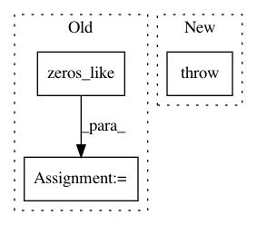

3735f4b48f52f7703944f36284b9e9ee3d1e8e5f,examples/tgn.py,,train,#,37
Before Change
pos_out, neg_out = model(src, pos_dst, neg_dst, t, x)
loss += criterion(pos_out, torch.ones_like(pos_out))
loss += criterion(neg_out, torch.zeros_like(neg_out))
total_loss += float(loss) * batch.num_events
if (i + 1) % backprop_every == 0:
loss = loss / backprop_every
loss.backward()
optimizer.step()
model.detach_memory()
After Change
model(src, pos_dst, neg_dst, t, x)
if i == 2:
raise NotImplementedError
// pos_out, neg_out = model(src, pos_dst, neg_dst, t, x)
// loss += criterion(pos_out, torch.ones_like(pos_out))
// loss += criterion(neg_out, torch.zeros_like(neg_out))
In pattern: SUPERPATTERN
Frequency: 3
Non-data size: 3
Instances
Project Name: rusty1s/pytorch_geometric
Commit Name: 3735f4b48f52f7703944f36284b9e9ee3d1e8e5f
Time: 2020-10-27
Author: matthias.fey@tu-dortmund.de
File Name: examples/tgn.py
Class Name:
Method Name: train
Project Name: stellargraph/stellargraph
Commit Name: 789d65f38f0949a3f03f61908a207cb558746769
Time: 2019-12-19
Author: andrew.docherty@data61.csiro.au
File Name: stellargraph/layer/preprocessing_layer.py
Class Name: GraphPreProcessingLayer
Method Name: call
Project Name: geomstats/geomstats
Commit Name: b0fc94c31a9a1a0d515223163432b5c75a8ec782
Time: 2020-04-09
Author: nicolas.guigui@inria.fr
File Name: geomstats/geometry/special_euclidean.py
Class Name: SpecialEuclidean
Method Name: inverse